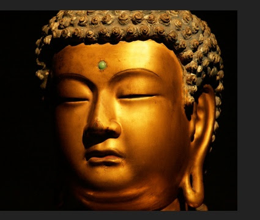
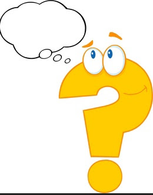
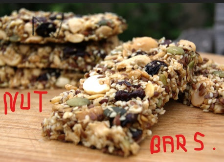
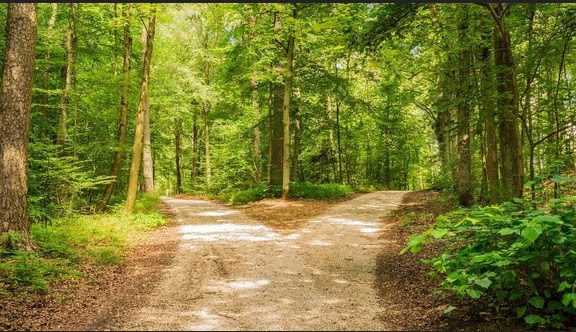
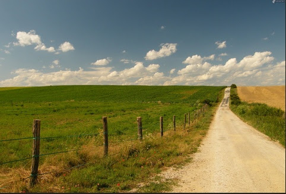
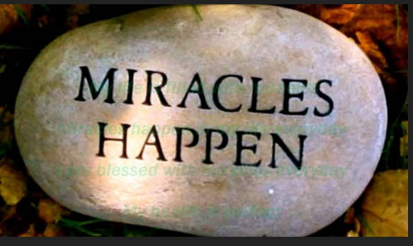

Still no spontaneous will of humanity to cooperate with equity, this means that our main choice to survive
is still war, as we still crave for competition, a process which eliminates..so is war and all of it.
Pity as life is the miracle but we refuse it, because to be born means to die, and so on..
The solution is in the problem and in the seing of it..living it, a hint: we are the problem!
Our task..
cheers to all..
Much respects.

Why is it that for millennia after our voluntary and deadly mental wrong turn, ( 13. 20, 30 more ?)
most of us just want to change anything, everything, with each me at the center so according to me and this
must be multiplied by all of us, but never ever willingly go down to the root of our insanity?
According to this there actually are around 8 billion universe on earth, all separated in a voluntary fight,
all this being a choice as we can well walk the path of cooperation, equity and much more...
Is it because we are insane so are this insanity? well, we certainly have chosen insanity millennia ago,
when for some reasons, one process, the thinking analytical process, took over the entire psyche as it
wishes to take over the entire planet, not even seeing any real why to what "I" am doing, just functioning
randomly based on random desires, fears, as well as all our attempts to escape the suffering we created or
which was created, trying to escape from to be born means to die...which make the dying part of life and so
on..not able to live that absolute fact, refusing it all the times during our "no life" time, at the same
time we refuse life as it is.
This what Satan or evil is, it is the thinking process if and when working alone, it cannot embrace life,
because it is not its purpose so is not in its programming, it has capacities to work in practical fields
ONLY..
ETC..........

THE Global so unity comes first........ whatever it is, whatever the cause is, and all of it! THE Global
as THE Ultimate Origin, there is nothing beyond.
What we now see or rather imagine since millennia (after our voluntary wrong turn in our psyche) is this
⛔ ME>global= adding each me gives the global..= delusional psyche = dementia= insanity !
each me in such case is separated from other me and from the universe,
then we turned into nut bars..as a logical consequence, out of many more, like illusion, violence, conflicts,
wars, stealing, suffering.................ad libitum..
this is a starting point, if not THE starting point..

Deep state does not exist, there is a hidden state, a bunch of top crooks who, unlike the flock,
cooperate to cheat others so us, and more specifically but not only the people who really work and produce
something.
It started millennia ago when we deliberately and-or not took THE wrong turn in our psyche,
as what is outside is just the same movement as what is inside each one psyche multiplied by all of us
We are this world, it shows what our psyche have become , this was and still is a choice..
Why so, saying deep state? and not the fact of an hidden state? because using such formula does not say
anything about the top crooks.
Everyone is concerned, as a crook or a real worker.
there is a state because we refuse to cooperate with equity, such form of cooperation cannot be forced.
If forced it is a form of slavery.
Who is us? who is we the self proclaimed good people.We the self proclaimed good people do not cooperate on
anything good at all, as we are too busy fighting each other for me to get more of the global cake, made by
all of us.
PS: top crooks do not bake any cake at all...
PS2: it is us the good people of this planet + the future top crooks who decided to behave that way millennia
ago who created all this.
what is our answer to that? not me..........
PS3: what is utterly wrong with all of us ( apart from "ME" of course?) , mankind? Simple enough to see is the
fact that we refuse life for what it is ( to be born means to die) and attempt to replace it what what "I" want,
multiplied by all of us..mere exceptions I hope
Morning impressionism!
the entire world , you, we , us, ( billion of separated me) have kept the basement for wars, conflicts,
violence, stealing, tortures, dementia, insanity and so on.
of course apart from "me" multiplied by all, less some exceptions as a guess.
Our basement being
-competition which eliminates so we should in fact talk about elimination, -vertical society of money value
given to everything people included, which crushes, steals, destroys etc, business
( outcome of competition so war)..
All these and much more are just side effects not THE cause, yet the effect turns itself in to a cause as well.
Side effet from the totalitarism of one single innate capacity over the entire human psyche, namely the thinking
process.
It is a machine, an organic machine, built by? programmed by? which ignores that it is a machine,
as when it imagines a mental "me", it sees itself as a human, without defining much of what a human is,
not talking here about an obvious physical me which is not the tree in the field, neither the dog next door
nor the galaxy..
Such view, originates from specific moments let us say: not of thought's ..
This machine has one single field where it can be used, the field of practicality, matter.
Nowhere else has it any competencies, yet it has invaded all fields where practicality has no say, this is
a fact and an obvious one, and this fact of invasion in wrong fields causes all our torments, they are a choice.,
certainly not a fate, a destiny. I say fact as for me it is a fact,
As a machine, a tool, the thinking process is a mean for practicality and nothing else, so it must be used by
a "hand" with a necessarily global "Intelligence" behind, as it is going to work as such everywhere all the
time!! of course we broke it willingly when refusing life for what it is, the refusal that to be born means
to die signifies such breakaway from what is fact, is real, now we are unable to live, having trapped ourselves
in a sort of permanent fight so suffering against the Universe..
PROMETHEUS....Adam and Eve..............and more, all speak about our psyche..about the thinking process,
the psyche, what may be qualified as "Divine", yet words in this matter are so poor ..

LE CHEMIN..
... vendre des armes, tu payes pour naître, tu payes pour mourir..
..cela dit le business et l'intégralité de nos sociétés depuis des millénaires mènent à tout cela..
on a choisit le combat de tous contre tous, aujourd'hui appelé compétition , un processus qui élimine...est
guerres et tout le reste..
or que dis la masse : SAUF MOI , multiplié par tous..
or la sur-vie physique et pratique est d'abord affaire globale, dans l'univers l'intention globale prime sur
le particulier, nous avons inversé ce fait..donc vivons dans un monde en fait non existant..
pourquoi ? entre autre à cause du refus donc de l'aptitude à vivre cet absolu : naître = mourir..
mais ceci est un effet d'autre chose..
EN NOUS..
quelque chose x mauvais , qui fut un choix délibéré, se produisit dans nos psychés l y a des millénaires.
Saisir Adam et Eve sans analyser ni réfléchir il faut, entre autre bien sur..et tout s'éclaire en moi, en nous..
Psyché que nous refusons absolument de regarder tellement c'est horrible..et tellement ce monde en fait
c'est nous...
et là je vois toujours débouler cette phrase laconique : SAUF MOI
ceci multiplié par quasiment 100% ..
Il y a un pourquoi bien sur...
pas de jugement , pas de juge , pas de coupable au sens des ministères de la punition humaine créé par
des truands et qui amènerait encore plus profondément dans la démence ordinaire humaine, mais des acteurs dans
ce drame humain et des actions, qu'il faut regarder..
ce SAUF MOI, empêche toute résolution de ce désastre..car il empêche factuellement toute compréhension de la
source du probleme en chacun, sauf moi, donc sa résolution, nous sommes la source du probleme bien sur..et
plus précisément notre pensée l'est depuis que elle a empêché nos autres capacités de se mettre en route le
moment venu, car elles ne sont pas ouvertes à la naissance, le câblage humain n' étant pas encore fini...
et les truands du sommet qui sont un tout petit peu moins « cons » que nous à ce niveau seulement, , nous
encouragent sur ce chemin, car eux ont compris cela, que ce « sauf moi » fait que rien d'important ne va
changer (sauf si..) puisque chaque « je » est parfait aux yeux de ce même « je »..
ceci maintient un statu-quo figé en profondeur, par
d'où la promotion de chaque « je » parfaitement contre nature et qui est le contraire du fait de la vie..qui
ne dépends pas du tout de notre avis et de nos désirs et peurs..
ceci au bout d'un temps x ne peut que s' auto détruire..
en est t'on rendu là ?
Potentiellement bien sur...
c'est déjà arrivé..........
Que faire ? ...
peut t'on encore être sauvé..
si il n'y a pas d'intervention disons « Divine », ça me semble mal parti mais ?? car je ne sais rien de ça..
juste mon ressenti...
Celle ci peu prendre 2 formes au moins
-directe, L'Origine agit directement de manière imprévisible etc
-indirecte
l'indirecte nous concerne ....directement !..ce monde que nous avons créé est souffrance mentale lourde,
nous devons la vivre sans rien attendre de cela, car elle est moi...et là des choses imprévisibles et impensables,
inimaginables etc se produiront comme elles le décident..pour nous ramener sur LE chemin..
si je peux choisir de voler, de tuer etc, le chemin où la vie est n'est pas l'objet d'un choix..
etc
Le grand désastre est évitable, je dirais même nécessaire en fait, mais en tant que origine de celui-ci nous
ne faisons globalement rien de bon dans le sens de voir le probleme en nous, donc de changer et de la solutionner
par visions....
car les truands du sommet que nous avons mis là eux ils coopèrent pour nous niquer
et nous les gens auto promus bon de la masse refusons totalement de coopérer sur quoique ce soit de simplement
bon et équitable..
car depuis des millénaires nous essayons de survivre physiquement dans cette illusion non perçue que
MOI>UNIVERS + le désir que naître ne veut plus dire mourir..
ceci doit revenir dans l'ordre des choses, et ça c'est notre tache, ça l'a toujours été d'ailleurs..
mes respects....

If the world keeps competition as a basement for any society, society being the entire human relationships,
then the today's top crooks will keep winning, and in fact so far right now are still winning by far, yet
comparatively being a few..but a few "which" cooperates to cheat all others, even showing us THE way , but not
to cheat others of course, as this cannot work globally but only for the few cooperating at an "evil" level..
Competition of course being a process which eliminates, so kill, destroy and all of it, it is our main choice,
usually a blind one..
There is no deep awakening at all on the planet..nor even a mild awakening of some sort, just one eye half
opening about what is totally superficial, this is a starting point, one must start somewhere.
what could be the consequences of that which remains a choice, kind of: all for me, only me....me,
me , me , me , me .......???
Well easy: same effects as yesterday and today..evil, mankind thinking process as a totalitarian capacity
over the entire psyche will just have a different frame and colour..
as this world is just and only the sum of what we have become millennia ago and want yet what we want
seems to be totally random , driven by fear of death = refusal of life, so greed only ( only an effect of ??)
why greed? it is a desperate attempt to secure oneself, it will never take place..
etc
Miracles happen, but this is not man-made...
yet we have one or two first steps to accomplish for that to take place, without any expectation...from
the thinking process or this illusory mental me..
hint: the thinking process if and when working as our only capacity is the ultimate source of our insanity...
why? because it is only a tool, yet vital, but only a programmed tool for what is practical...and as
a tool it has to be used by ???
this ?? is not turned on at birth...
